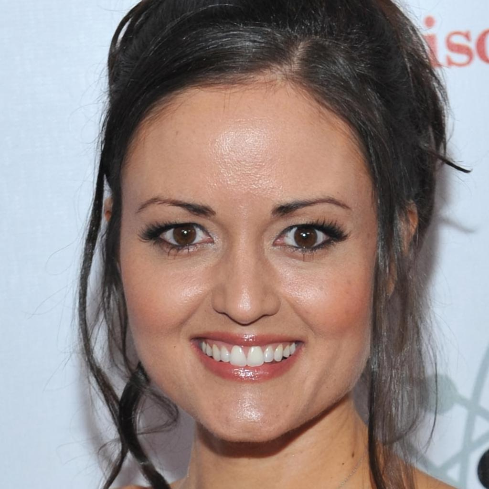
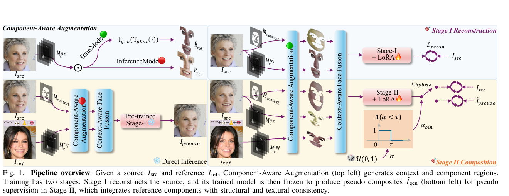
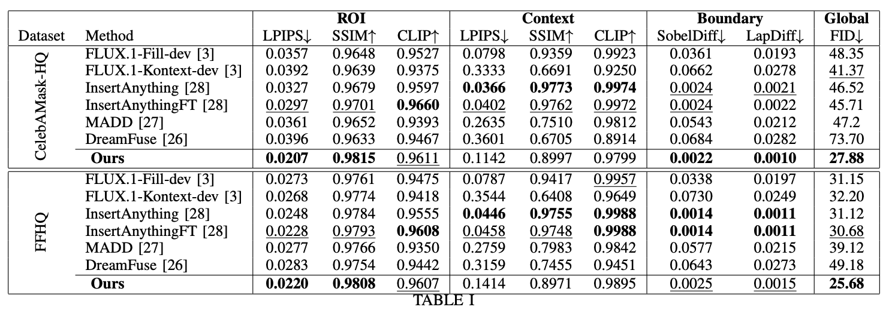
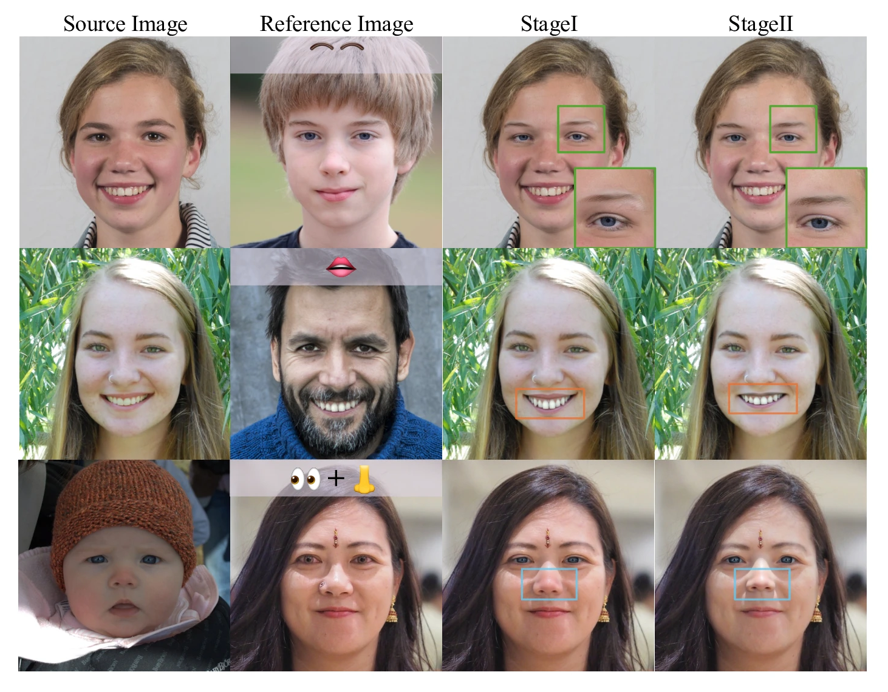
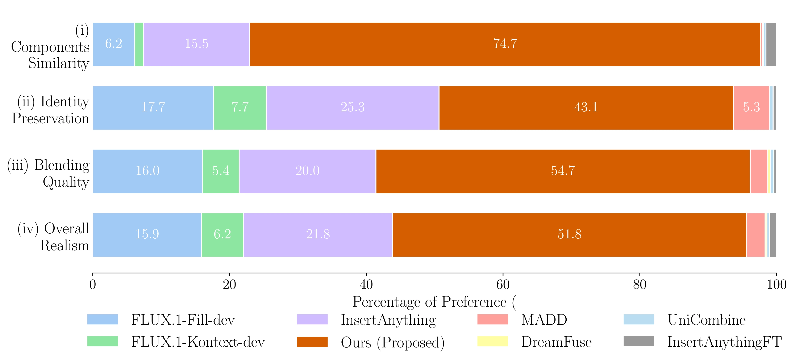

Why this task?
Fine-grained component control is useful for forensic sketching, presurgical visualization, and controllable digital media. Existing face editing methods primarily target global identity or attribute-level changes.
IJCNN 2026
Given a source portrait, a reference portrait, and a set of selected facial components, FaceComposer transfers the specified components while preserving source pose, expression, illumination, and facial context.
The task is to synthesize a coherent portrait by transferring selected facial components—eyebrows, eyes, nose, or mouth—from a reference image into a source image.
Fine-grained component control is useful for forensic sketching, presurgical visualization, and controllable digital media. Existing face editing methods primarily target global identity or attribute-level changes.
Faces have rigid structural regularity, and viewers are highly sensitive to small distortions. Cross-identity differences in pose, scale, texture, illumination, and ethnicity amplify misalignment. More fundamentally, paired ground truth does not exist: there is no real target image that simultaneously preserves the source structure and context while containing the selected components of another identity.
Local fidelity: the edited ROI should match the reference. Global coherence: non-edited attributes and ROI-context boundaries should remain natural.
Choose a source–reference pair, then select any single component or combination. Each selection displays its corresponding FaceComposer output.

4 components selected

Precomputed interactive demo. Every component selection maps to a separately generated FaceComposer result. With no component selected, the source portrait is shown unchanged.
The project page follows the paper pipeline: data-level augmentation, model-level context-aware fusion, and optimization-level multi-stage training.

Photometric LAB perturbations and mild geometric transformations simulate cross-identity variations in color, pose, scale, and component placement.
Reference ROIs and source context are processed as complementary fusion inputs, allowing both sides of the boundary to adapt instead of enforcing a rigid copy-paste operation.
Stage I learns self-reconstruction. Stage II uses hybrid supervision from pseudo composites and real reconstruction pairs to balance component fidelity and global coherence.
The paper evaluates three distinct requirements: reference fidelity inside the edited ROI, source consistency in the surrounding context, and smoothness at the ROI-context boundary.
LPIPS, SSIM, and CLIP compare the edited components with the reference.
LPIPS, SSIM, and CLIP measure agreement with the non-edited source face.
SobelDiff and LapDiff quantify first- and second-order discontinuities around the edited ROI.
FID evaluates the distribution-level realism of complete generated portraits.
4.1
FaceComposer retains fine reference details while reducing boundary artifacts, copy-paste effects, and structural distortions seen in general insertion and reference-editing baselines.

4.2
FaceComposer achieves the best global FID on both datasets (27.88 on CelebAMask-HQ; 25.68 on FFHQ) and leading ROI and boundary performance.
Context scores are not the sole objective: the method allows source context and transferred ROI to mutually adapt, prioritizing global harmony over rigid pixel preservation.

4.3
Stage II corrects boundary seams, color inconsistency, and unfaithful transfer remaining after Stage I reconstruction training.

4.4
Across 26 participants and 30 comparative image sets, FaceComposer was preferred by 74.7% for component similarity, 54.7% for blending, and 51.8% for overall realism.

Photometric and geometric augmentation improve cross-appearance robustness. Adding Context-Aware Face Fusion produces the best trade-off in ROI fidelity and global FID. A balanced Stage II mixture (τ = 0.5) gives the best FID.